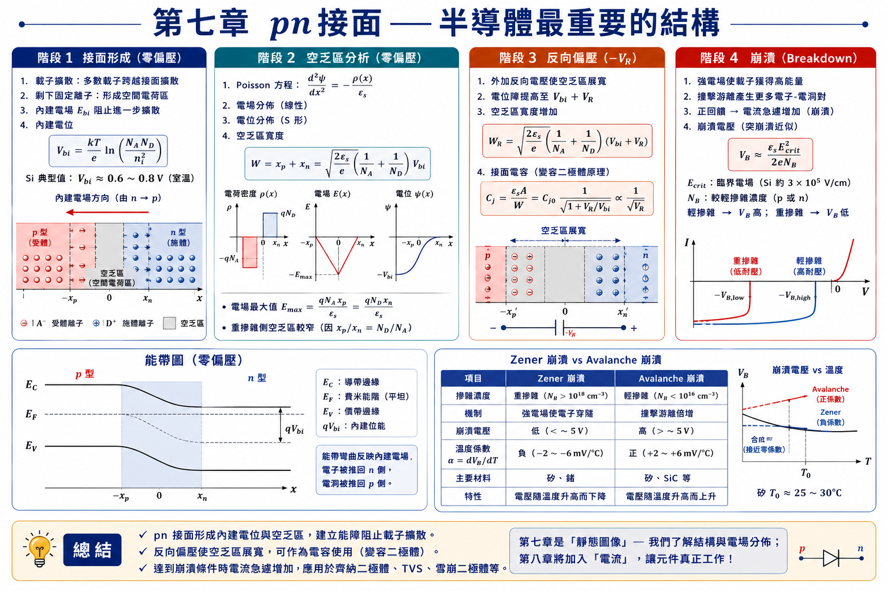
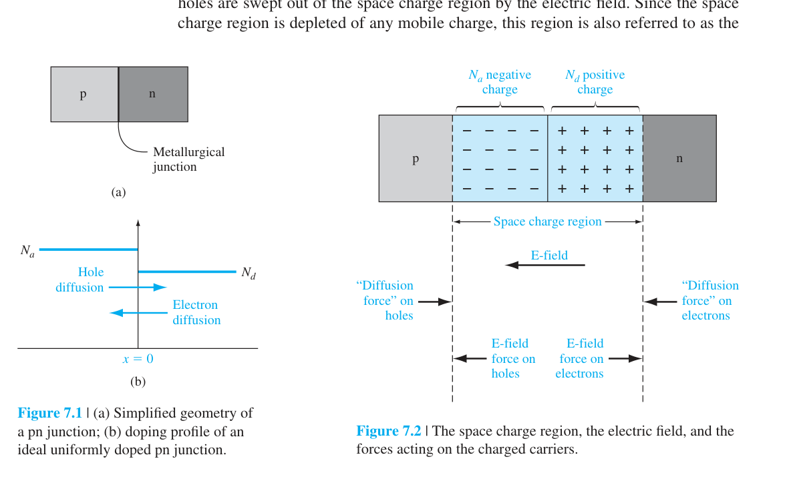
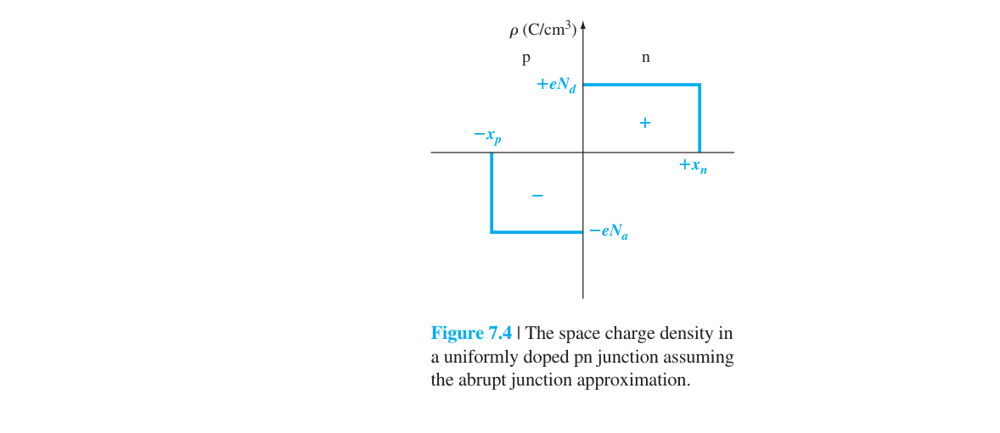
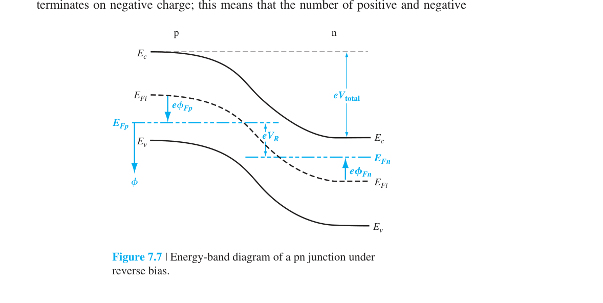
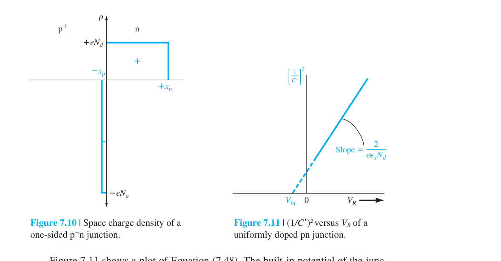
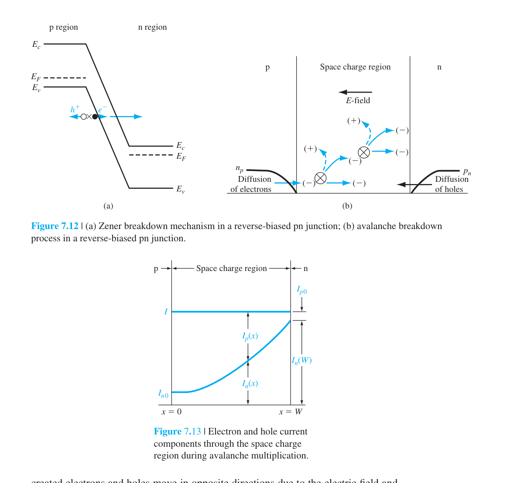

pn 接面
前面六章建立了半導體材料物理的完整基礎。現在我們把 p 型和 n 型半導體放在一起，觀察它們的界面處發生什麼——這就形成了pn 接面，半導體元件物理中最基本也最重要的結構。
本章討論 pn 接面的靜態特性——在零偏壓和反向偏壓下的能帶圖、空間電荷分布、電場、電位、以及接面電容。這是理解所有半導體元件（二極體、BJT、MOSFET、太陽能電池）的第一步。第八章將討論順向偏壓下的電流-電壓特性。
2. 內建電位 $V_{bi}=\frac{kT}{e}\ln\frac{N_a N_d}{n_i^2}$——平衡時空乏區的總電位降（Si 典型 0.7–0.9 V）
3. 空乏區寬度 $W=\sqrt{\frac{2\varepsilon_s(V_{bi}+V_R)}{e}\left(\frac{N_a+N_d}{N_a N_d}\right)}$——Poisson 方程+突變空乏近似推得
4. 最大電場在冶金接面處：$E_{max}=-e N_d x_n/\varepsilon_s$——逆偏時電場增大
5. 接面電容 $C_j=\varepsilon_s/W$——電壓可控電容，$C_j\propto 1/\sqrt{V_{bi}+V_R}$（突變接面）
6. 單側接面（$N_a\gg N_d$ 或反過來）：$W$ 主要由輕摻雜側決定→$W\approx\sqrt{2\varepsilon_s(V_{bi}+V_R)/(e N_B)}$
7. 逆偏崩潰：雪崩（載子撞擊游離倍增）和齊納（穿隧）——$V_{BR}$ 隨摻雜增加而降低
8. 線性漸變接面：$N_d-N_a=ax$→$W\propto V^{1/3}$，$C_j\propto V^{-1/3}$——與突變接面的 $V^{-1/2}$ 不同
9. 超突變接面 $m=-3/2$：$C_j\propto V^{-2}$→變容二極體實現線性頻率調諧
10. 本章所有公式都是第八章 Shockley 二極體方程的基礎——先懂空乏區靜電學，再談電流

7.1 pn 接面的基本結構
最簡單的 pn 接面是突變接面（abrupt junction）——摻雜濃度在冶金界面處從 $N_a$（p 側）突然變為 $N_d$（n 側）。雖然真實元件中的接面是透過擴散或離子植入形成的（摻雜分布較漸進），突變接面是最容易分析的理想化模型，也是理解所有真實接面的出發點。

接面形成的物理過程——四個步驟：
第一步：巨大的濃度梯度。在接面形成的瞬間，p 側有高濃度電洞（∼$10^{17}$ cm⁻³），n 側有高濃度電子（∼$10^{16}$ cm⁻³）。濃度梯度驅動載子擴散——電洞從 p 側擴散到 n 側，電子從 n 側擴散到 p 側。
第二步：留下帶電的雜質離子。當電洞離開 p 側時，原本被電洞中和的負受體離子 $N_a^-$ 被「揭露」出來——它們固定在晶格中，無法移動。同理，n 側留下正的施體離子 $N_d^+$。這些不可移動的雜質離子形成空間電荷區（space charge region）。
第三步：內建電場的形成。正離子（n 側）和負離子（p 側）之間產生從 n 指向 p 的內建電場。這個電場阻止進一步的載子擴散——它把電洞推回 p 側、把電子推回 n 側。
第四步：動態平衡。擴散電流（載子從高濃度往低濃度）和漂移電流（內建電場推動載子）達到精確平衡→淨電流為零→接面處於熱平衡。
7.2.1 內建電位差 ⭐
在熱平衡下，一個系統只能有一個 Fermi 能階——如果 $E_F$ 在各處不同，電子就會流動直到均勻。n 側的 $E_F$ 原本靠近 $E_c$（因摻雜施體），p 側的 $E_F$ 原本靠近 $E_v$（因摻雜受體）。為了讓同一個 $E_F$ 貫穿整個結構，能帶必須彎曲。
能帶彎曲量對應一個內建電位差 $V_{bi}$（也稱為 diffusion potential 或 built-in potential）。它是 p 側和 n 側原始 Fermi 能階位置之差的直接度量：
推導思路：n 側的電子濃度 $n_{n0} = n_i e^{(E_F-E_{Fi})_n/kT}$。p 側的電子濃度 $n_{p0} = n_i e^{(E_F-E_{Fi})_p/kT}$。兩側的 $(E_{Fi})_n$ 和 $(E_{Fi})_p$ 不同——它們的差 $=eV_{bi}$。而 $n_{n0}\approx N_d$, $n_{p0}=n_i^2/N_a$。代入取對數即得上式。
$V_{bi}$ 的數值範圍：對 Si（$n_i=1.5\times10^{10}$ cm⁻³），$N_a=10^{17}$, $N_d=10^{16}$ cm⁻³→$V_{bi}=0.0259\ln(10^{33}/2.25\times10^{20})=0.754$ V。對 Ge（$n_i=2.4\times10^{13}$）相同摻雜→$V_{bi}=0.0259\ln(10^{33}/5.76\times10^{26})=0.368$ V。對 GaAs（$n_i=1.8\times10^6$）→$V_{bi}\approx1.2$ V。
7.2.2–7.2.3 電場分布與空乏區寬度 ⭐
空間電荷區中的電場由 Poisson 方程決定：$d^2\phi/dx^2 = -\rho(x)/\epsilon_s$。在空乏近似（depletion approximation）下，我們假設空乏區內完全沒有自由載子，空間電荷僅來自離子化的雜質：
在空乏區外，假設材料為電中性（$\rho=0$）。空乏近似雖然是一個理想化，但它給出了極其準確的結果（因為自由載子濃度在空乏區中確實遠小於雜質離子濃度）。

Poisson 方程積分一次得電場。在 n 側（$0 負號表示方向（從 n 指向 p）。電荷守恆要求總正電荷等於總負電荷：$N_a x_p = N_d x_n$。這意味著重摻雜側的空乏區比輕摻雜側窄——因為重摻雜側的空間電荷密度更高，只需較短的距離就能建立相同的總電荷量。 再積分一次得電位，總電位差 $=V_{bi}$。由此解出空乏區總寬度： $W$ 的數量級：對 Si，$N_a=10^{17}$, $N_d=10^{16}$ cm⁻³，$\epsilon_s=11.7\epsilon_0=1.04\times10^{-12}$ F/cm，$V_{bi}=0.754$ V→$W=\sqrt{2\cdot1.04\times10^{-12}\cdot0.754/[1.6\times10^{-19}\cdot(1.1\times10^{17}/10^{33})]}\approx3.3\times10^{-5}$ cm $=0.33$ µm。
互動模型｜PN 接面空乏區多圖聯動
調整兩側摻雜、外加偏壓與溫度，觀察同一組物理條件如何同步改變空乏區、固定空間電荷、電場、電位與接面電容。建議先預測變化方向，再移動滑桿驗證；所有控制項皆可使用方向鍵微調。
🎛️ 開啟 PN 接面互動模型收合 PN 接面互動模型 摻雜、偏壓與溫度 → 空乏區、電場、電位、電容
7.3 反向偏壓與接面電容
當外加反向偏壓 $V_R$（p 側接負、n 側接正）時，外加電場的方向與內建電場相同→總電位障壁增大為 $V_{bi}+V_R$→空乏區變寬：

接面電容（junction capacitance）或空乏層電容：空乏區兩側的空間電荷 $Q = eN_d x_n = eN_a x_p$ 形成一個平行板電容器。當反向偏壓變化時，$W$ 變化→$Q$ 變化→表現為電容：
$C_j \propto 1/\sqrt{V_{bi}+V_R}$：反向偏壓越大→$W$ 越大→$C_j$ 越小。這就是變容二極體（varactor diode）的工作原理——用電壓來控制電容值，用於射頻電路的頻率調諧。

單側突變接面（one-sided abrupt junction，如 p⁺n）：當一側的摻雜遠重於另一側（$N_a\gg N_d$），空乏區幾乎完全在輕摻雜側。$W\approx x_n = \sqrt{2\epsilon_s(V_{bi}+V_R)/(eN_d)}$，$C_j = \sqrt{e\epsilon_s N_d/[2(V_{bi}+V_R)]}$。$C_j$ 完全由輕摻雜側的濃度決定——這對變容二極體的設計很重要。
7.4 接面崩潰
反向偏壓不能無限增大。當空乏區中的電場達到某一臨界值 $E_{\text{crit}}$時，載子透過碰撞游離倍增→反向電流急劇增大→pn 接面崩潰（breakdown）。
雪崩倍增（avalanche multiplication）的物理機制：空乏區中的少數載子（反向漏電流中的電子或電洞）被高電場加速到極高動能。當它們撞擊晶格原子時，如果動能超過 $E_g$（Si: 1.12 eV），就可以把價帶電子撞入導帶→產生一個新的電子-電洞對。這些新生載子也被加速→撞出更多載子→正回授連鎖反應→電流倍增。

崩潰電壓取決於輕摻雜側的濃度：
其中 $N_B$ 是輕摻雜側的濃度，$E_{\text{crit}}\approx3\times10^5$ V/cm（Si）。$V_B\propto1/N_B$——輕摻雜（低 $N_B$）→高崩潰電壓。功率二極體（需要耐壓數百至數千伏）使用極輕摻雜的集極/基極區域。
雪崩 vs 齊納——兩種不同的崩潰機制：
| 特性 | 雪崩崩潰（Avalanche） | 齊納崩潰（Zener） |
|---|---|---|
| 摻雜濃度 | 輕摻雜（$N_B < 10^{17}$） | 重摻雜（$N_B > 10^{18}$） |
| 空乏區寬度 | 寬（>100 nm） | 極窄（<20 nm） |
| 機制 | 碰撞游離倍增 | 帶對帶直接穿隧 |
| $V_B$ 範圍 | > 6 V（Si） | < 5 V（Si） |
| 溫度係數 | 正（$V_B$ 隨 $T$ 增加） | 負（$V_B$ 隨 $T$ 下降） |
| 物理原因 | 高溫→聲子散射增加→平均自由程縮短→需要更高電場才能碰撞游離 | 高溫→$E_g$ 縮小→穿隧所需的電場降低 |
$V_B \approx 6$ V 時，兩種機制同時存在且溫度係數互相抵消——這是齊納二極體用作電壓參考的最佳工作點。
7.5 非均勻摻雜接面
到目前為止，我們討論的都是突變接面（abrupt junction）——假設兩側半導體各自均勻摻雜，在冶金界面處摻雜濃度階梯式變化。然而真實的 pn 接面元件——透過擴散（diffusion）或離子植入（ion implantation）製程形成——幾乎不會是均勻摻雜的。擴散製程使雜質從表面向內部逐漸擴散，形成如圖所示的漸進摻雜分布。在冶金接面附近的淨摻雜濃度可以用線性函數來近似，這就是線性梯度接面（linearly graded junction）的由來。此外，在某些電子應用中，刻意設計特定的非均勻摻雜分布可以獲得特殊的接面電容特性——例如超突變接面（hyperabrupt junction）用於壓控振盪器中的變容二極體。
本節將從 Poisson 方程出發，完整推導線性梯度接面的電場分布、內建電位、空乏區寬度和接面電容，然後介紹超突變接面的設計原理與應用。
7.5.1 線性梯度接面（Linearly Graded Junction）
物理圖像：考慮一個擴散形成的 pn 接面。如果從均勻摻雜的 n 型半導體表面擴散受體原子（如硼），受體濃度從表面向內部逐漸降低，經過冶金接面後，n 側的施體濃度保持均勻或近似線性變化。在冶金接面（$x=0$）附近，淨雜質濃度可以近似為位置的線性函數：
其中 $a$ 是摻雜梯度（impurity gradient），單位為 cm⁻⁴。$x>0$ 為 n 側（$N_d>N_a$），$x<0$ 為 p 側（$N_a>N_d$）。這個近似在冶金接面附近的空乏區範圍內是相當準確的。
Poisson 方程與空間電荷：在空乏近似下，自由載子濃度忽略不計，空間電荷密度完全來自離子化的雜質：
注意：這與突變接面不同——突變接面的 $\rho$ 在每側均為常數（p 側 $-eN_a$、n 側 $+eN_d$），而線性梯度接面的空間電荷密度自身就是位置的函數。Poisson 方程寫為：
設空乏區從 $-x_0$ 延伸到 $+x_0$（因對稱性，兩側寬度相等），邊界條件為 $E(-x_0)=E(+x_0)=0$。
電場分布——二次函數而非線性：對 Poisson 方程積分一次（$dE/dx = \rho/\epsilon_s$）：
更一般的寫法（以冶金界面 $x=0$ 的電場最大值為參考）：
其中 $W = 2x_0$ 是總空乏區寬度。這是一個二次函數——與突變接面的線性電場分布（三角分布）截然不同。最大電場仍然發生在冶金界面 $x=0$：
內建電位——與空乏區寬度的三次方關係：對電場再積分一次得電位。設 $V(-x_0)=0$（p 側空乏區邊界為參考零點），則在冶金界面的電位為：
完整的電位分布為三次函數（S 形曲線）：
總內建電位差（從 $-x_0$ 到 $+x_0$）：
這是一個關鍵結果——$V_{bi} \propto W^3$，而突變接面是 $V_{bi} \propto W^2$。這意味著增加同樣的電位差，線性梯度接面的空乏區擴展比突變接面更慢。
另一種估計 $V_{bi}$ 的方法是使用突變接面 $V_{bi}$ 公式的推廣——以空乏區邊界的摻雜濃度代入：$N_d(x_0)=a x_0$、$N_a(-x_0)=a x_0$：
空乏區寬度——$W \propto V^{1/3}$：加入反向偏壓 $V_R$ 後，總電位障壁變為 $V_{bi}+V_R$。從 $V_{bi}+V_R = (e a / 12\epsilon_s) W^3$ 解出 $W$：
對比—突變接面：$W \propto \sqrt{V_{bi}+V_R}$（冪次 $1/2$）；線性梯度：$W \propto (V_{bi}+V_R)^{1/3}$（冪次 $1/3$）。這意味著線性梯度接面的空乏區寬度對偏壓變化較不敏感。
接面電容——$C' \propto V^{-1/3}$：利用與突變接面相同的方法——微分量 $dQ' = \rho(x_0) \cdot dx_0 = e a x_0 \cdot dx_0$（在空乏區邊界因 $dV_R$ 而露出的額外空間電荷），得到單位面積的接面電容：
簡潔記憶形式：$C' = \epsilon_s / W$（與突變接面的形式一致，但 $W$ 的定義不同！）。對比三個關鍵冪次：
- 突變接面：$C' \propto (V_{bi}+V_R)^{-1/2}$
- 線性梯度：$C' \propto (V_{bi}+V_R)^{-1/3}$
- 超突變：$C' \propto (V_{bi}+V_R)^{-1/(m+2)}$（$m$ 可負可正）
7.5.2 超突變接面（Hyperabrupt Junction）
動機——為什麼需要特殊的摻雜分布：線性梯度接面和突變接面都是「自然」形成的接面類型（分別對應擴散和離子植入製程）。但在某些射頻應用中，我們需要接面電容對電壓有更強的依賴性——$C(V)$ 變化愈劇烈，頻率調諧範圍就愈大。超突變接面透過刻意設計的摻雜分布來達成這個目標：讓 n 型摻雜在靠近冶金界面處較高，向 n 側內部逐漸降低。
廣義摻雜分布模型：對於一個單側 p⁺n 接面（p 側重摻雜），n 側的廣義摻雜濃度分布可以寫為：
其中 $B$ 是常數，$m$ 是描述分布形狀的指數：
- $m = 0$（$N=B$，均勻摻雜）→ 突變接面
- $m = +1$（$N=Bx$，線性增加）→ 線性梯度接面
- $m = -1, -2, -3, \dots$ → 超突變接面
當 $m$ 為負值時，n 側摻雜在冶金界面附近最高，向內遞減——這通常是透過在重摻雜 n⁺ 基板上成長輕摻雜的 n 型磊晶層，然後在表面進行 p⁺ 擴散來實現的。
超突變接面的 C-V 關係：使用與前述相同的分析方法，可以推導出廣義接面電容公式：
這可以改寫成更直觀的冪次形式：
關鍵觀察：$m$ 越負（負得越多），指數 $1/(m+2)$ 的絕對值越大，電容對電壓的變化就越劇烈。
變容二極體的設計目標——線性頻率調諧：變容二極體（varactor diode）與電感並聯組成 LC 諧振電路時，諧振頻率為：
在實際電路應用中——特別是 FM 調變器（frequency modulator）和鎖相迴路（PLL）的壓控振盪器（VCO）——我們希望諧振頻率是控制電壓 $V_R$ 的線性函數：$f_r \propto V_R$。代入 $f_r \propto 1/\sqrt{C}$，得到要求 $C \propto V_R^{-2}$。從 $C \propto V_R^{-1/(m+2)}$ 可知：
因此，$m=-3/2$ 的超突變摻雜分布是最理想的 VCO 變容二極體設計——它使頻率與控制電壓之間達到線性關係，大幅簡化 VCO 的線性化電路設計。
| 接面類型 | 指數 $m$ | $C \propto V_R^{-n}$ | 指數 $n = 1/(m+2)$ | $f_r \propto V_R^{n/2}$ | 應用場景 |
|---|---|---|---|---|---|
| 突變接面（Abrupt） | $m=0$ | $C \propto V_R^{-1/2}$ | $n = 0.5$ | $f \propto V_R^{0.25}$ | 一般濾波器、開關二極體 |
| 線性梯度（Linear） | $m=+1$ | $C \propto V_R^{-1/3}$ | $n \approx 0.33$ | $f \propto V_R^{0.17}$ | 擴散製程的預設接面 |
| 超突變（Hyperabrupt） | $m=-3/2$ | $C \propto V_R^{-2}$ | $n = 2.0$ | $f \propto V_R^{1.0}$ ⭐ | VCO、PLL、FM 調變 |
| 超突變（其他） | $m=-1$ | $C \propto V_R^{-1}$ | $n = 1.0$ | $f \propto V_R^{0.5}$ | 寬頻調諧（次線性） |
本章摘要
- 接面形成四步驟：濃度梯度→載子擴散→留下雜質離子（空間電荷區）→內建電場→擴散與漂移平衡。
- 內建電位 $V_{bi}$：$(kT/e)\ln(N_a N_d/n_i^2)$。Si 典型 0.6–0.8 V。不能直接用電壓表量到。
- 空乏近似：$\rho=-eN_a$（p 側）、$+eN_d$（n 側）。Poisson 方程→電場（三角分布）→電位（S 形曲線）。
- 空乏區寬度 $W$：$\propto\sqrt{V_{bi}}$。重摻雜→窄 $W$。電荷守恆：$N_a x_p=N_d x_n$（重摻雜側更窄）。
- 反向偏壓：$V_R$→$V_{bi}+V_R$→$W$ 變寬。$C_j=\epsilon_s/W\propto1/\sqrt{V_{bi}+V_R}$→變容二極體原理。
- 崩潰：$V_B\approx\epsilon_s E_{\text{crit}}^2/(2eN_B)$。輕摻雜→高耐壓。雪崩倍增機制。
- 非均勻接面：線性梯度 $W\propto V^{1/3}$。超突變接面 $C_j\propto V^{-m}$（$m>1/2$）→VCO 應用。
推導、假設與章末診斷
方程式使用契約與邊界條件
- 突變接面、均勻摻雜、一維、完全游離、非退化且熱平衡或準靜態反偏。
- 空乏近似：空乏區內自由載子忽略，$\rho=-qN_A$（p 側）或 $+qN_D$（n 側）；中性區 $\rho\approx0$。
- 邊界 $E(-x_p)=E(x_n)=0$，電位連續；電荷中性要求 $N_Ax_p=N_Dx_n$。
- 高正偏、強產生復合、緩變接面或接近崩潰時需改用更完整模型。
中間推導：空乏寬度
- 由 Poisson 方程 $dE/dx=\rho/\epsilon_s$ 分別積分兩側電場。
- 利用外緣 $E=0$ 與界面電場連續，得到 $N_Ax_p=N_Dx_n$。
- 再積分 $E=-dV/dx$，電位降等於兩個三角形電場面積。
- $W=x_p+x_n=\sqrt{\frac{2\epsilon_s}{q}(V_{bi}+V_R)(1/N_A+1/N_D)}$。
章末練習與概念診斷
反向偏壓增加時，哪一側空乏區增加較多？
較輕摻雜側；由 $N_Ax_p=N_Dx_n$ 可知寬度與摻雜濃度成反比。
為何接面電容隨反偏增加而下降？
反偏使 $W$ 增大，而 $C_j=\epsilon_sA/W$，等效電荷板距離增加。
延伸計算練習
完成上方診斷後，請在不查公式的情況下重建代表推導，並改變一個參數檢查極限行為。更多含數值與解答的題目：本章完整習題頁。